Los videojuegos se pueden clasificar en diferentes tipos o géneros según su mecánica de juego, objetivo principal y características. Algunos de los géneros más populares incluyen acción, aventura, rol (RPG), estrategia, simulación, deportes, y juegos de puzzle y fiesta. También existen clasificaciones más específicas como los juegos de disparos en primera persona (FPS) y en tercera persona (TPS), o los juegos de estrategia en tiempo real (RTS).
Géneros principales de videojuegos:
Acción:
Se centran en la acción y la respuesta rápida del jugador, con elementos como combate, disparos y acrobacias.


Aventura:
Implican la exploración de un mundo, la resolución de acertijos y la progresión de la historia, a menudo con un fuerte componente narrativo.
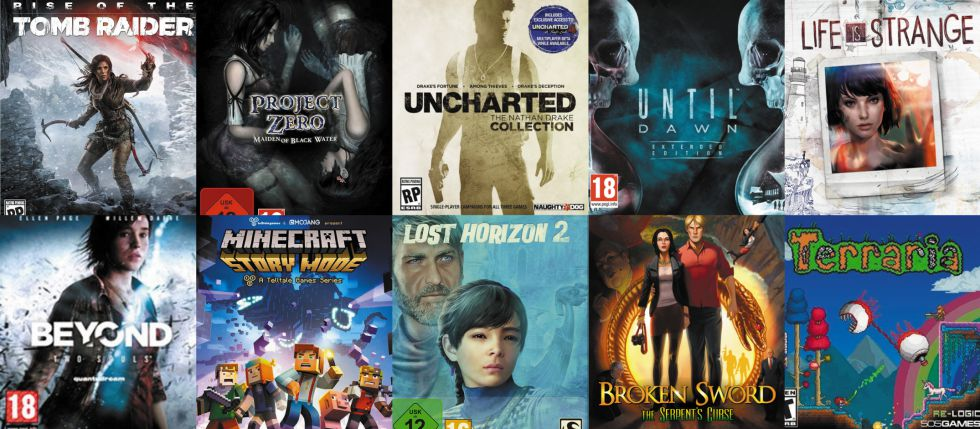
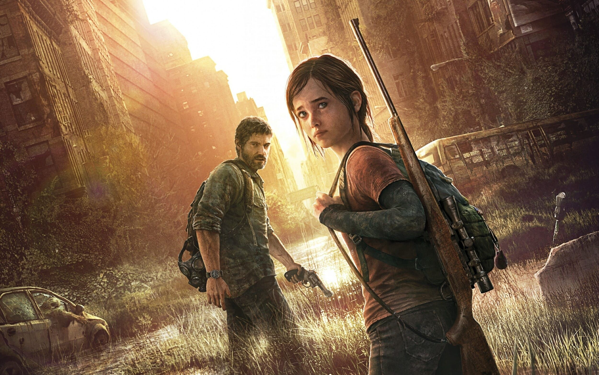
Rol (RPG):
Permiten al jugador asumir el papel de un personaje en un mundo ficticio, con elementos de personalización, progreso y desarrollo de habilidades.
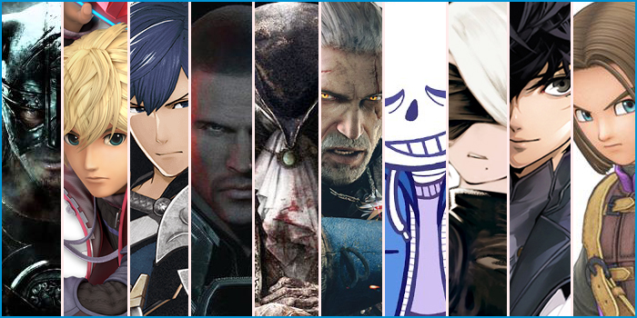
Estrategia:
Juegos donde la planificación y la gestión de recursos son clave para la victoria.
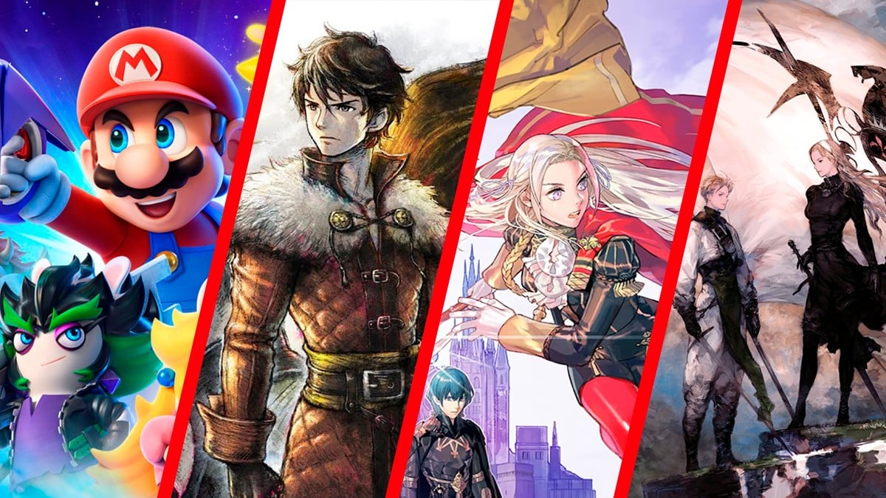
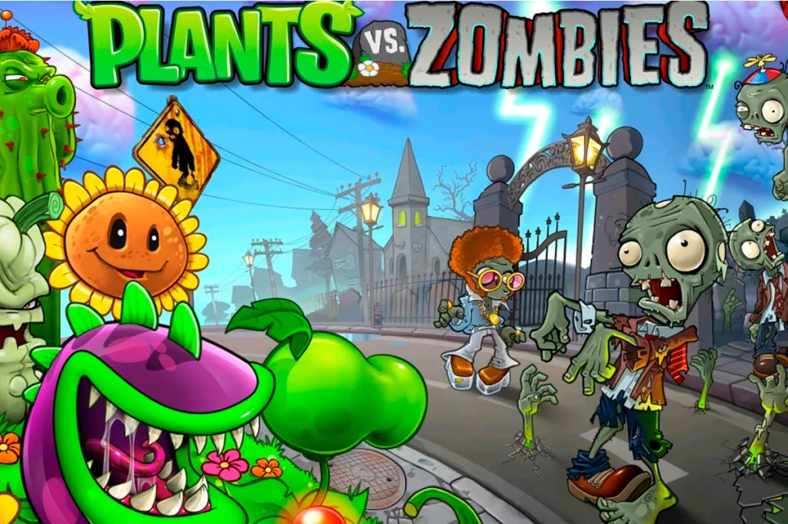
Simulación:
Permiten al jugador experimentar diferentes aspectos de la vida real, como la conducción, la aviación, la gestión de negocios o la construcción de ciudades.
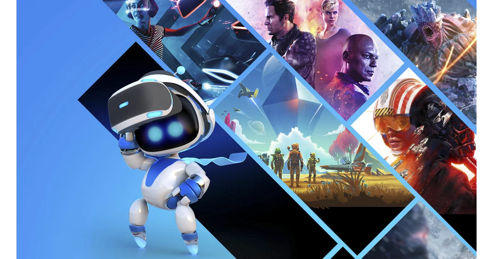
Deportes:
Recrean la experiencia de jugar a diferentes deportes, con un enfoque en la habilidad, la precisión y la competencia.
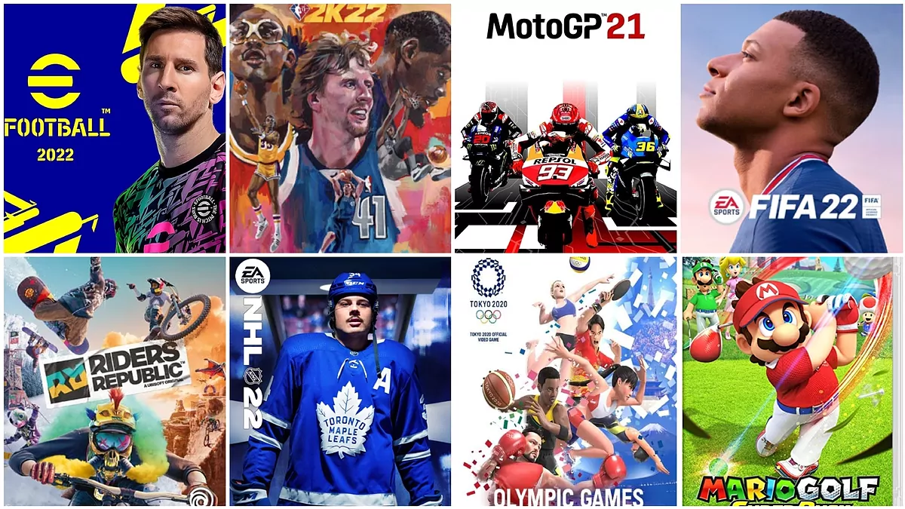
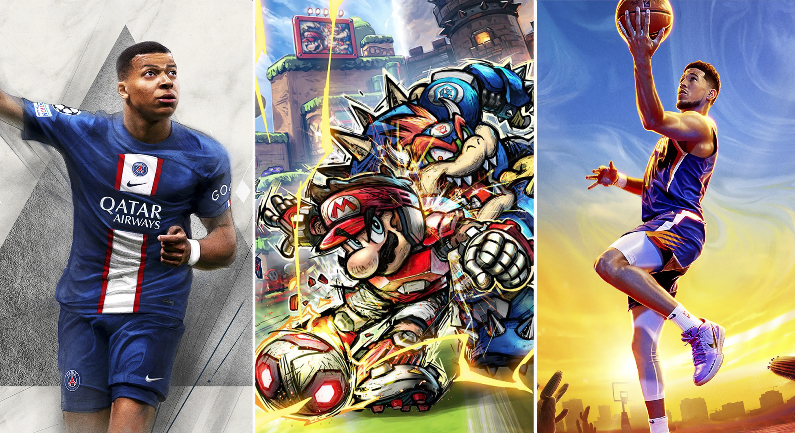
Juegos de puzzle y fiesta:
Se centran en la resolución de acertijos y la diversión social, con reglas sencillas y mecánicas de juego fáciles de aprender.
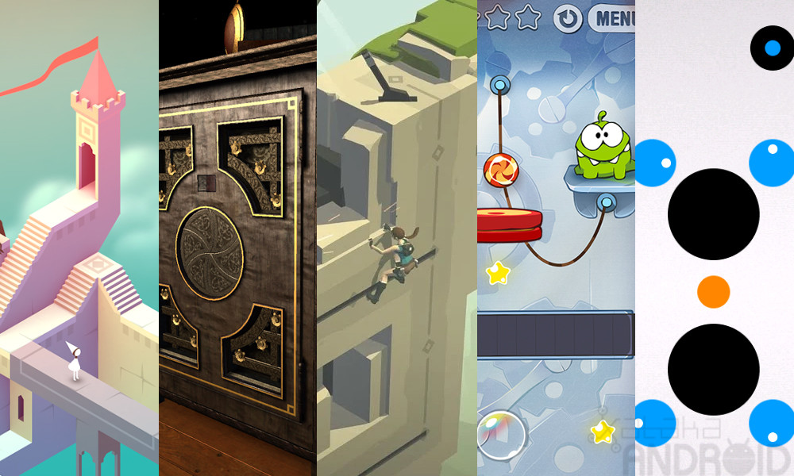

Subgéneros y clasificaciones adicionales:
Shooters (FPS y TPS):
Dentro del género de acción, los FPS ofrecen una perspectiva en primera persona, mientras que los TPS ofrecen una perspectiva en tercera persona.
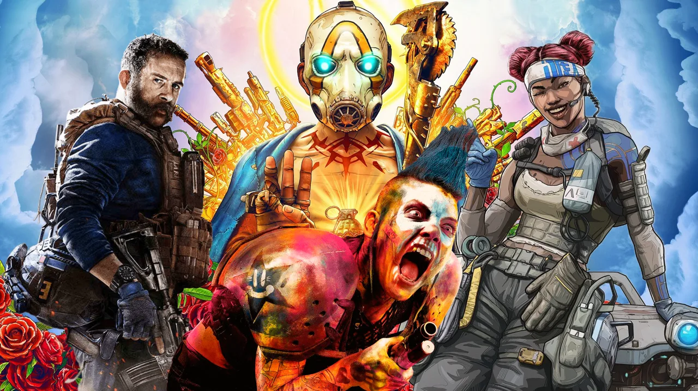
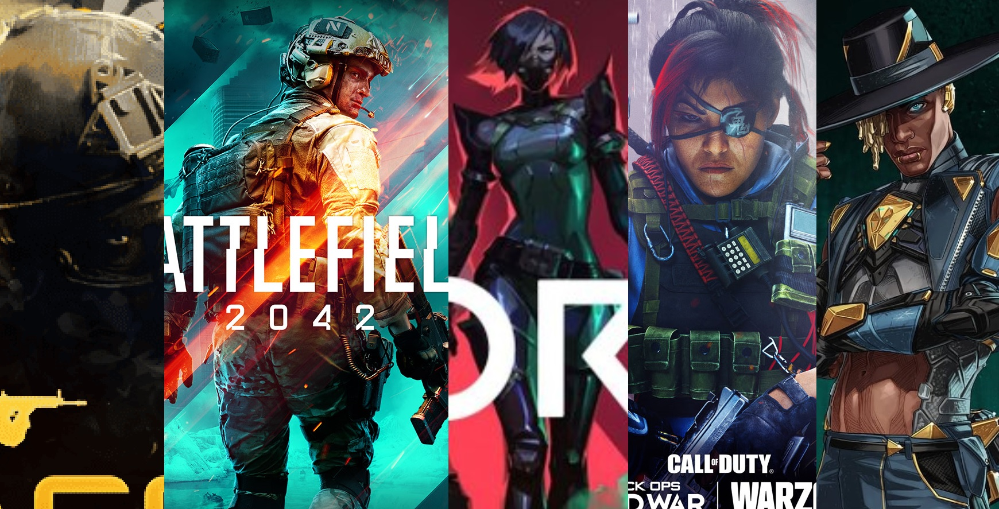
Arena de batalla multijugador en línea (MOBA):
Un subgénero de estrategia que se caracteriza por la competencia en línea entre dos equipos.
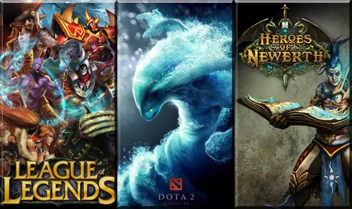
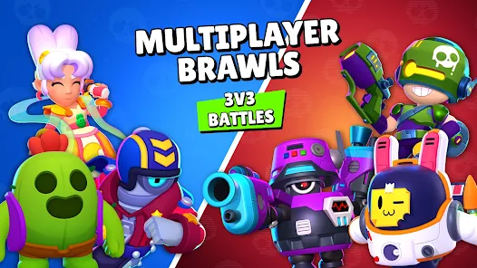
Sandbox (mundo abierto):
Juegos que permiten al jugador una gran libertad de movimiento y acción en un mundo amplio y expansivo.
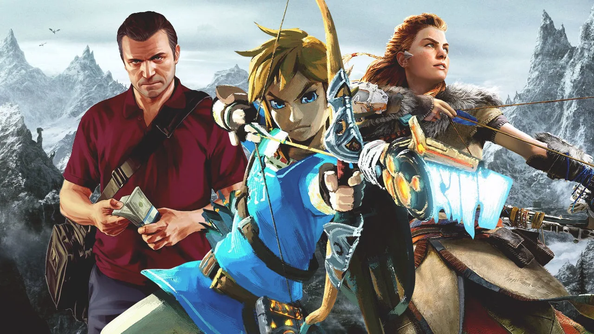
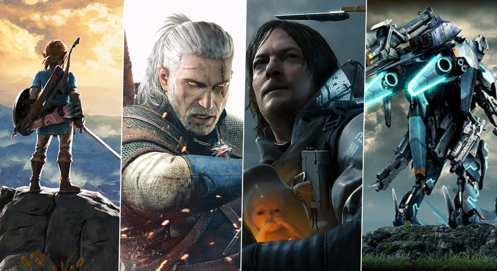
Juegos de plataformas:
Juegos donde el jugador debe saltar y moverse a través de plataformas, con énfasis en la destreza y el timing.
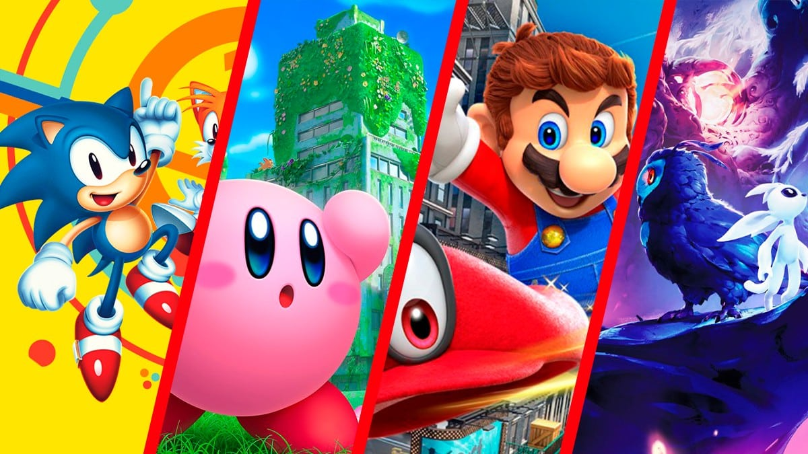
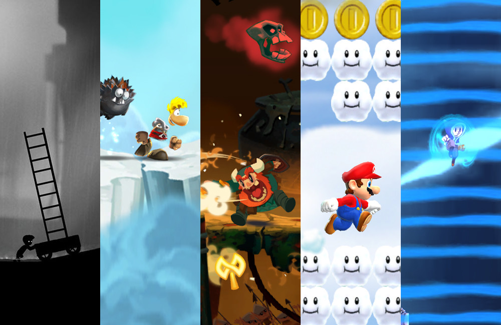
Juegos musicales:
Juegos que requieren que el jugador interactúe con música, como tocar instrumentos virtuales o seguir el ritmo de una canción.
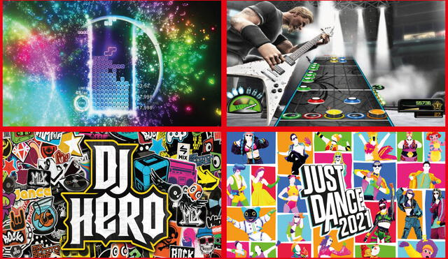
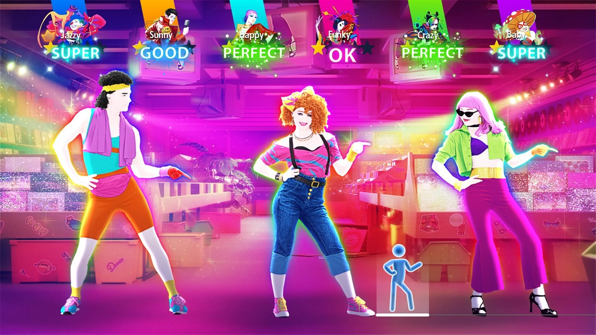
Juegos de mesa:
Versiones digitales de juegos de mesa clásicos, con oponentes controlados por IA.
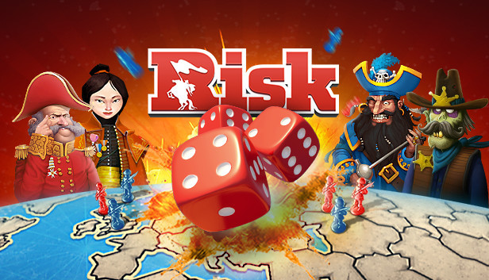
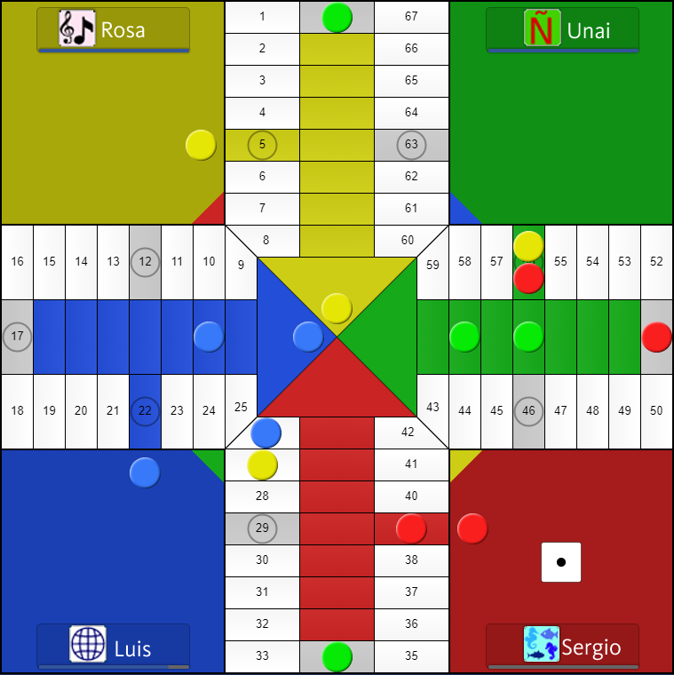